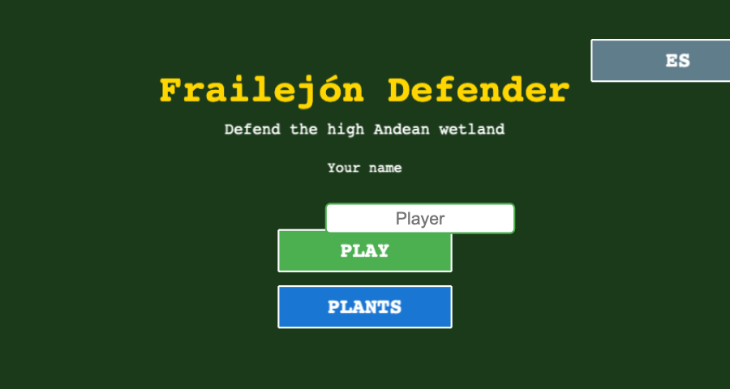
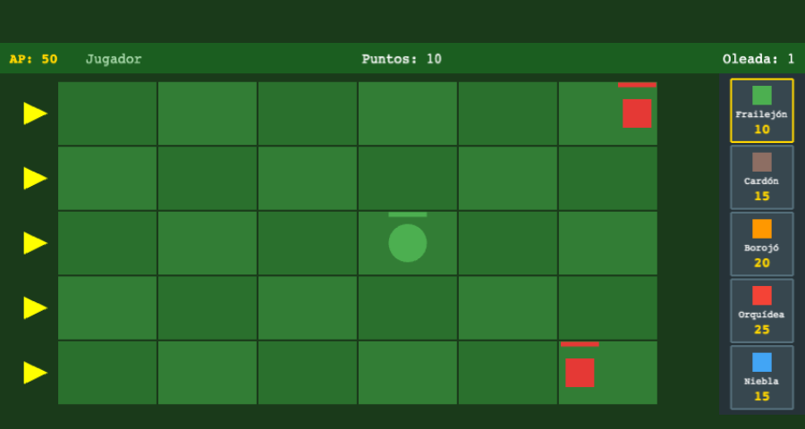
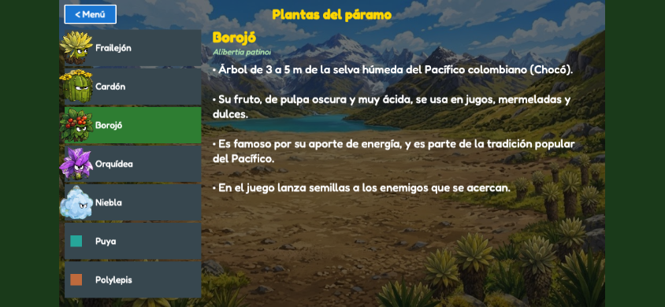
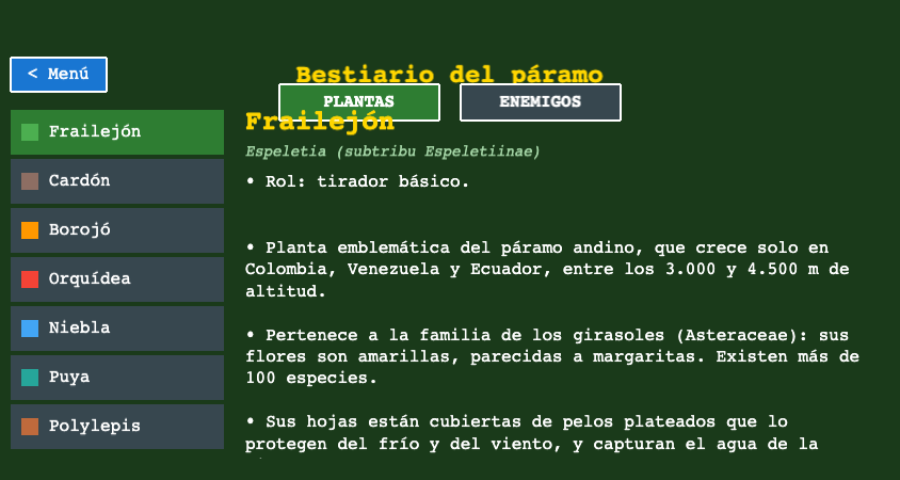
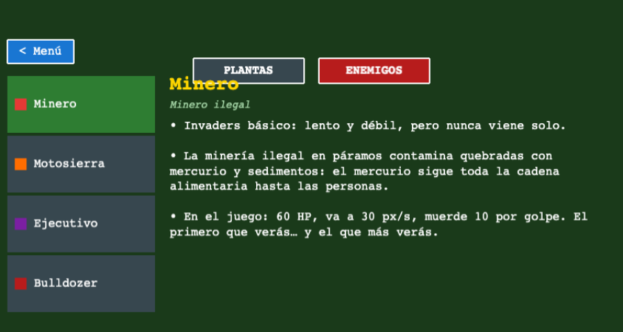

Lo que necesitas
Toma dos minutos y no tiene costo.
Un celular Android
Con Google Play instalado.
Tu cuenta de Google
La misma de Gmail y de Play Store.
14 días con el frailejón
Déjala instalada y juega cuando quieras.
Cómo unirte
Hazlo desde el celular Android, con la misma cuenta de Google en los tres pasos.
-
Únete al grupo de testers
Inicia sesión con tu cuenta de Google y toca “Unirse al grupo”. Si ves “No tienes permiso para acceder a este contenido”, no pasa nada: es el aviso de los mensajes del grupo, y el botón para unirte sigue arriba.
Abrir el grupo -
Acepta la invitación de Google Play
Abre el enlace y toca “Convertirse en verificador”. Cuando diga “Ya eres verificador”, vuelve a esta página y sigue al paso 3: el enlace azul de esa página abre Google Play en el navegador y puede decir que la app no existe.
Abrir la invitación -
Instala Frailejón Defender
Descárgala desde Google Play. Si sale “No se encontró el elemento”, revisa que la Play Store esté con la misma cuenta (tu foto, arriba a la derecha) y espera unos minutos después de aceptar.
Ir a Google Play
Cómo se juega
Cuatro pasos y ya estás defendiendo el páramo.

Escribe tu nombre
En el menú escribe tu nombre y toca Jugar. Puedes cambiar el idioma arriba a la derecha (ES/EN), y con Plantas revisas el herbario antes de empezar.

Siembra con tus AP
Cada planta cuesta AP (energía del páramo): frailejón 10, cardón 15, borojó 20, orquídea 25, niebla 15. Siembra con cautela: los AP se acumulan solo con el tiempo.

Detén a los herbívoros
Llegan por oleadas desde la izquierda. Cada planta defiende a su manera: el frailejón dispara, el cardón bloquea, la niebla nubla la vista. No dejes que crucen el borde.

Aprende lo real
Cada planta y enemigo es real del páramo andino. En el Bestiario lees su historia: dónde vive, para qué sirve y por qué se debe proteger. Jugar también enseña.
Lo que vas a ver
Un páramo hecho pantalla, con datos verídicos de su flora.


Ligero y sin cuentas
- Sin cuenta ni correo, y sin permisos raros.
- Tu nombre y tu puntaje se quedan en el teléfono.
- Sin anuncios ni rastreo.
¿Algo falla?
Escríbenos abajo y nos llega directo al correo: cada comentario nos ayuda a mejorar el juego.
¿Tienes iPhone?
Frailejón Defender llega muy pronto a la App Store.
Escríbenos
Cuéntanos qué te pasó: un error, una idea o que no pudiste instalar.
Un páramo vivo, una pantalla a la vez.
Gracias por ayudar a que el frailejón llegue a más manos.